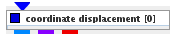
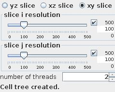
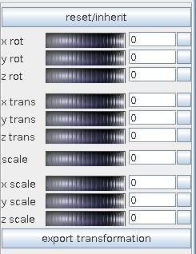
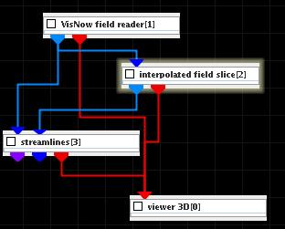
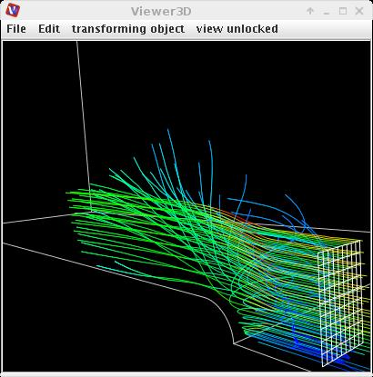

|
|
|

displaces each node by the value of a vector component at this node, animates such displacement
| input port | type | description | data acceptors |
|---|---|---|---|
| inField | VNField | ||
| output port | type | description | data schemas |
| outRegularField | VNRegularField | Regular Field |
|
| outIrregularField | VNIrregularField | Irregular Field |
|
| outObj | VNGeometryObject | Output of geometry object for 3D rendered volume |
INTERPOLATED FIELD SLICE
The interpolated field slice extracts a 2D slice from a field with an arbitrarily positioned slice plane.
Input data
The input field is 3D regular 3-space or irregular 3-space.
Output data
The output field is regular 2D 3-space with affine geometry. A 3D geometry object of the field.
Computation parameters

A radio button panel defines the slice orientation as yz slice, xz slice or xy slice.
Two sliders allow to adjust the slice resolution in i- and j-direction.

The user can carry out several slice transformations:
by using the wheels or typing values into the text fields on the right hand side of the wheels. Clicking on the buttons on the right most side cancels this particular transformation.
Push the reset/inherit button to withdraw all transformations.
The export transformation button prepares output field of the module.
Presentation parameters
Presentation tab contents are described in the common interfaces section unter the Presentation Panel entry.
Example

Choose VisNow field reader module from regular data readers library, interpolated field slice and streamlines modules from 3D field mappers library and connect them to viewer 3D.
Let VisNow field reader module read in bluntfin.vnf. In interpolated field slice module UI choose for both slice solutions 10. In its GUI choose lines instead of surface and change colormap to white color (bicolor map with both colors white). Change the position and the scale of the slice. In streamlines module UI choose appropriate values for integration steps (for example 0.005) and step range (for example 0 to 1000).
